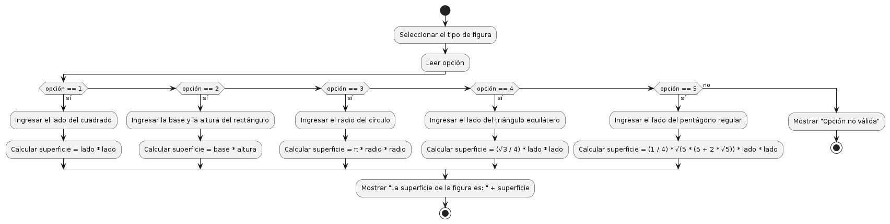

Medida de la Superficie de una Figura Regular
Teoría
Para calcular la superficie de figuras geométricas regulares, se aplican fórmulas específicas:
- Cuadrado: A = L2
- Rectángulo: A = b × h
- Círculo: A = πr2
- Triángulo equilátero: A = √3/4 × L2
- Pentágono regular: A = 1/4 × √(5(5 + 2√5)) × L2
Diagrama de Flujo
Ejemplo de Código en C
#include <stdio.h>
#include <math.h>
void calcularSuperficie() {
int opcion;
double lado, base, altura, radio, superficie;
printf("Seleccione el tipo de figura:\\n");
printf("1. Cuadrado\\n");
printf("2. Rectángulo\\n");
printf("3. Círculo\\n");
printf("4. Triángulo equilátero\\n");
printf("5. Pentágono regular\\n");
scanf("%d", &opcion);
switch(opcion) {
case 1:
printf("Ingrese el lado del cuadrado: ");
scanf("%lf", &lado);
superficie = lado * lado;
break;
case 2:
printf("Ingrese la base y la altura del rectángulo: ");
scanf("%lf %lf", &base, &altura);
superficie = base * altura;
break;
case 3:
printf("Ingrese el radio del círculo: ");
scanf("%lf", &radio);
superficie = M_PI * radio * radio;
break;
case 4:
printf("Ingrese el lado del triángulo equilátero: ");
scanf("%lf", &lado);
superficie = (sqrt(3) / 4) * lado * lado;
break;
case 5:
printf("Ingrese el lado del pentágono regular: ");
scanf("%lf", &lado);
superficie = (1.0 / 4) * sqrt(5 * (5 + 2 * sqrt(5))) * lado * lado;
break;
default:
printf("Opción no válida.\\n");
return;
}
printf("La superficie de la figura es: %.2lf\\n", superficie);
}
int main() {
for (int i = 0; i < 5; i++) {
printf("\\nCálculo %d:\\n", i + 1);
calcularSuperficie();
}
return 0;
}